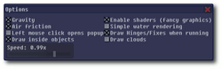

Phun
Dieser Artikel wurde für die folgenden Ubuntu-Versionen getestet:
Ubuntu 16.04 Xenial Xerus
Ubuntu 14.04 Trusty Tahr
Zum Verständnis dieses Artikels sind folgende Seiten hilfreich:
 Phun ist eine 2-D-Physik-Simulation, die von Emil Ernerfeld als Master-Arbeit an der Umeå-Universität in Schweden geschrieben wurde. Das Programm kann zur reinen Spielerei benutzt werden, aber auch im Unterricht eingesetzt werden, um verschiedene physikalische Prozesse aus der Mechanik spielerisch darzustellen. Das englischsprachige Programm ist Closed-Source, kann aber frei für den nicht-kommerziellen Einsatz verwendet werden (Freeware).
Phun ist eine 2-D-Physik-Simulation, die von Emil Ernerfeld als Master-Arbeit an der Umeå-Universität in Schweden geschrieben wurde. Das Programm kann zur reinen Spielerei benutzt werden, aber auch im Unterricht eingesetzt werden, um verschiedene physikalische Prozesse aus der Mechanik spielerisch darzustellen. Das englischsprachige Programm ist Closed-Source, kann aber frei für den nicht-kommerziellen Einsatz verwendet werden (Freeware).
Das Projekt lebt inzwischen in der kommerziellen Variante Algodoo  weiter.
weiter.
Voraussetzungen¶
Folgendes Paket muss zuerst installiert [1] werden:
libpng3 (universe)
 mit apturl
mit apturl
Paketliste zum Kopieren:
sudo apt-get install libpng3
sudo aptitude install libpng3
Neben einer hardwarebeschleunigten Grafikkarte wird auch das Paket libsdl1.2debian benötigt, ehe das Programm startet (dies ist aber meist vorinstalliert). Ohne Hardwarebeschleunigung läuft es zwar auch, aber vor allem bei komplexen Szenen, die Wasser enthalten, wird das Ganze sehr langsam. Prinzipiell ist Phun recht speicher- und CPU-hungrig, so dass man auf einem schwachen PC wenig Freude haben wird. Etwas Abhilfe kann das Abschalten der Wolken in den Optionen bringen.
Installation¶
Das Spiel ist nicht mehr in den offiziellen Paketquellen enthalten.
Fremdquelle¶
Playdeb bietet eine Fremdquelle zur Installation an. Wie man diese in das eigene System einbindet, ist im Artikel Getdeb näher erläutert.
Hinweis!
Zusätzliche Fremdquellen können das System gefährden.
Nach dem Einbinden der Fremdquelle und dem Aktualisieren der Paketquellen kann folgendes Paket installiert werden:
phun (PlayDeb)
mit apturl
Paketliste zum Kopieren:
sudo apt-get install phun
sudo aptitude install phun
Bedienung¶
Es soll hier keine komplette Übersicht gegeben werden, sondern nur eine kleine Einführung in die einzelnen Werkzeuge und Optionen. Vor allem ein Beispielvideo auf YouTube zeigt sehr gut, was Phun alles kann.
Menü¶
Im Menü "File" kann man einzelne Szenen laden, speichern, importieren oder die aktuelle Szene löschen. Gespeicherte Szenen liegen im Ordner Scenes als phn-Datei und können auch direkt mit einem Texteditor bearbeitet werden.
Navigation¶
In einer Szene selbst kann man mit dem  Mausrad zoomen und mit der
Mausrad zoomen und mit der  Maustaste den Hintergrund fixieren und umherschieben. Alternativ kann man auch rechts auf den Hintergrund klicken und über das aufspringende Menü die Szene verschieben und in sie zoomen. Zusätzlich gibt es links oben unter den Optionen noch die Möglichkeit, den Zoom per Schieberegler einzustellen.
Maustaste den Hintergrund fixieren und umherschieben. Alternativ kann man auch rechts auf den Hintergrund klicken und über das aufspringende Menü die Szene verschieben und in sie zoomen. Zusätzlich gibt es links oben unter den Optionen noch die Möglichkeit, den Zoom per Schieberegler einzustellen.
Objekte wählt man aus, indem man sie anklickt oder mit dem Brush-Werkzeug einkreist. Ausgewählte Objekte blinken und lassen sich gemeinsam verschieben oder drehen. Das Verschieben eines ausgewählten Objektes geschieht über die  Maustaste, die man festhalten muss. Eine Rotation erhält man über die festgehaltene Maustaste. Hält man
Strg gedrückt und verschiebt ein Objekt, kopiert man es.
Maustaste, die man festhalten muss. Eine Rotation erhält man über die festgehaltene Maustaste. Hält man
Strg gedrückt und verschiebt ein Objekt, kopiert man es.
Ein Objekt löscht man, in dem man es markiert und Entf drückt oder einen Strich mit dem Brush- oder Drag-Werkzeug darüber zeichnet.
Hat man eine Szene erstellt, kann man über den großen, grünen Abspielknopf die Animation starten und danach wieder pausieren.
Werkzeuge¶
Über den Rechtsklick auf ein Objekt erhält man je nach Objekttyp ein neues Menü mit zusätzlichen Eigenschaften. Bei fast allen kann man Folgendes unter "Geometry settings..." einstellen:
"Friction" - Reibung zwischen 0.0 und 2.0
"Bounciness" - Abprallstärke zwischen 0.0 und 1.0
"Density (weight)" - Dichte (Gewicht) zwischen 0.0001 und 100.0
"Collides with stuff" - legt fest, ob das Objekt mit der Umgebung interagiert
"Liquefy selected" - ausgewählte Objekte in Wasser transformieren
"Add center hinge" - ein Gelenk an den Mittelpunkt setzen (soweit möglich)
Die Werkzeuge sind im Einzelnen:
"Brush" - Dies zeichnet Freihand-Polygone. Hält man die Taste ⇧ fest, zeichnet man gerade Linien. Zusätzlich kann man hierüber Objekte markieren und löschen (siehe oben). Brush-Objekte können per "Transform into circle" in einen Kreis umgewandelt werden.
"Drag" - Hierüber kann man alle nicht fixierten Objekte während der Animation bewegen. Während der Aufbauphase kann man nur fixierte Objekte damit bewegen.
"Plane" - Zeichnet eine Ebene, wobei der Richtungspfeil (Normalenvektor) mit der Maus vorgegeben wird. Eine Ebene besitzt nur die Eigenschaften "Friction" und "Bounciness".
"Circle" - Erstellt einen Kreis, wobei man zuerst den Mittelpunkt angibt und dann bei festgehaltener linker Maustaste die Größe (Radius) des Kreises bestimmt.
"Box" - Erstellt ein Rechteck. Hält man ⇧ gedrückt, entsteht ein Quadrat. Box-Objekte können per "Transform into circle" in einen Kreis umgewandelt werden.
"Chain" - Hiermit erstellt man eine Kette zwischen zwei Objekten oder dem Hintergrund und einem Objekt, die aus mehreren Kreisen und Klemmen besteht. Die Kette wird automatisch mit einer Klemme an einem Objekt fixiert, falls möglich. Man kann separat die Eigenschaften der Kreise und der Klemmen einstellen. Zusätzlich gibt es noch die Option "Dissolve chain", mit der man die Verbindung auflöst.
"Spring" - Erstellt eine Feder zwischen zwei Objekten. Zieht man die Objekte danach auseinander oder drückt sie zusammen, dehnt sich die Feder oder wird gespannt. Über die Optionen "Spring strength" und "Spring damping" kann man die Stärke der Feder zwischen 0.001 und 1.0 und die Dämpfung zwischen 0.0 und 2.0 einstellen.
"Fixate" - Fixiert ein Objekt mit einer Klemme. Es wird grundsätzlich das Objekt mit dem dahinterliegenden fixiert. Liegt kein Objekt dahinter, wird es am Hintergrund fixiert. Die Größe der Klemme ist abhängig vom Zoomfaktor.
"Hinge" - Gelenke fixieren ein oder zwei Objekte, machen sie aber zusätzlich beweglich/drehbar in diesem Punkt. Jedes Gelenk kann mit einem "Motor" versehen werden, der automatisch arbeitet oder manuell durch die Cursortasten bedient werden kann. Zusätzlich lässt sich die Drehrichtung ("Reversed"), die Geschwindigkeit ("Motor speed") zwischen 0 und 2400 UpM und die Motorstärke ("Motor strength") zwischen 0 und unendlich ("+inf") einstellen
Optionen¶
 Im Optionsfenster gibt es relativ wenig Einstellmöglichkeiten:
"Gravity" - schaltet die Gravitation an/aus
"Air Friction" - Luftwiderstand an/ausschalten
"Left mouse click opens popup" - linke Maustaste = rechte Maustaste
"Draw inside objects" - innerhalb von Objekten zeichnen
"Speed" - Geschwindigkeit der Simulation einstellen
"Enable shaders" - Schattierungen de/aktivieren (falls von der Grafikkarte unterstützt)
"Simple water rendering" - Wasser vereinfacht/komplett darstellen
"Draw Hinges/Fixes when running" - bei der Animation Gelenke und Klemmen ein/ausblenden
"Draw clouds" - Wolken im Hintergrund ein/ausblenden
Beispiel - Auto¶
Als simples Beispiel soll ein Auto gebastelt werden.
Hierfür fügt man zuerst eine Ebene ("Plane") hinzu, deren Pfeil nach oben zeigt.
Danach wählt man das "Brush"-Werkzeug und zeichnet die Karosserie schwebend über den Boden. Wichtig ist, dass die Animation dabei nicht läuft.
Jetzt aktiviert man die Option "Draw inside Opjects", zeichnet ein erstes Rad ("Circle"), deaktiviert "Draw inside Opjects" wieder, markiert dass eben erstellt Rad, hält Strg fest und zieht eine Kopie an die andere Seite des Autos.
Danach wählt man beide Kreise aus ( Strg beim Anklicken festhalten), und fügt über "Add center hinge" ein Gelenk hinzu. Wichig ist, dass das Gelenk auch über der Karosserie liegt.
Dann wählt man die beiden Gelenke aus und wählt "Motor" in den Optionen.
Zum Schluss spielt man die Animation ab und freut sich über das Gefährt.
Man kann in diesem Beispiel schön mit der Reibung der Ebene (z.B. Glatteis mit geringer Reibung), dem Gewicht des Wagens oder der Leistung der Motoren experimentieren.
(Kleiner Hinweis: Bei der Abbildung wurde etwas geschummelt. Es ist nicht möglich, Löcher in ein Objekt zu schneiden. Die Fenster sind einfach zwei neue Brush-Objekte, die die Farbe des Hintergrunds zugewiesen bekommen haben.)
Problembehebung¶
Phun hat die Beta-Phase der Entwicklung nie verlassen, was man an einigen Stellen merkt. Eines der größten Probleme ist, dass das Programm nicht-deterministisch ist. Das bedeutet, startet man eine Szene mehrmals, sieht das Ergebnis verschieden aus, was in manchen Fällen sehr ärgerlich sein kann.
Dennoch macht Phun sehr viel Spaß und man kann damit locker einige Stunden lang "Physik lernen".
- Erstellt mit Inyoka
-
 2004 – 2017 ubuntuusers.de • Einige Rechte vorbehalten
2004 – 2017 ubuntuusers.de • Einige Rechte vorbehalten
Lizenz • Kontakt • Datenschutz • Impressum • Serverstatus -
Serverhousing gespendet von